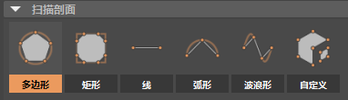
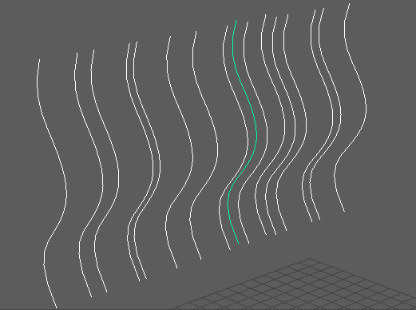
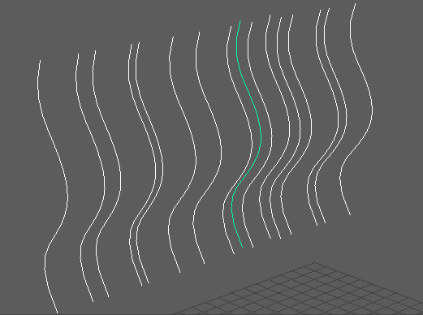

使用“扫描网格”(Sweep Mesh)工具可以基于直线或简单曲线创建多边形网格。
基于曲线创建网格
- 创建曲线。（在“创建”(Create)菜单中选择“曲线工具”(Curves Tools)，或使用“曲线/曲面”(Curves/Surfaces)工具架）。
- 选择曲线后，从“多边形建模”(Poly Modeling)工具架中选择“扫描网格”(Sweep Mesh)，或者选择“”(Create > Sweep Mesh)。
“多边形建模”(Poly Modeling)工具架中的“扫描网格”(Sweep Mesh)
将使用默认的“多边形”(Poly)扫描剖面，从曲线路径创建网格。也会创建 sweepMeshCreator 输入节点。
- 从扫描剖面中选择形状。

- 使用属性编辑器(Attribute Editor)中“sweepMeshCreator”选项卡下的“扫描网格”(Sweep Mesh)选项修改曲线网格。
- 有关其中每个选项的说明，请参见“扫描网格”(Sweep Mesh)选项。
从多条曲线创建网格
- 创建多条曲线后，将其全部选中。
- 选择“”(Create > Sweep Mesh)
 。此时将出现一个窗口，询问您是要为一条曲线还是多条曲线创建节点。

。此时将出现一个窗口，询问您是要为一条曲线还是多条曲线创建节点。
 - 选择“每条曲线对应一个节点”(One node for each curves)，以便选定曲线由单独的节点控制（即，可以将“扫描网格”(Sweep Mesh)设置应用于选定组中的各条曲线）。
注： 在“属性编辑器”(Attribute Editor)中，将为每条曲线创建 SweepMeshCreator<x>（其中 x 是曲线名称或编号）选项卡。还会为每条曲线创建 sweepMeshCreator 输入节点。使用默认的“多边形”(Poly)扫描剖面均匀创建网格。
- 使用属性编辑器(Attribute Editor)中相应“sweepMeshCreator”选项卡下的“扫描网格”(Sweep Mesh)选项，分别选择每条曲线以修改曲线网格。
有关其中每个选项的说明，请参见“扫描网格”(Sweep Mesh)选项。
如果要将“扫描网格”(Sweep Mesh)应用于多条曲线，但要单独处理每条曲线（例如，在头发卡片中），请按照以下步骤操作：
不使用曲线创建网格
在创建(Create)菜单中选择”(Create > Sweep Mesh)，或使用“曲线/曲面”(Curves/Surfaces)工具架。使用默认设置时，基于直线创建网格。使用属性编辑器(Attribute Editor)中“sweepMeshCreator”选项卡下的“扫描网格”(Sweep Mesh)选项修改曲线网格。
请参见扫描网格示例工作流：开瓶器、扫描网格示例工作流：框架和扫描网格示例工作流：动画曲线，了解一些示例项目。